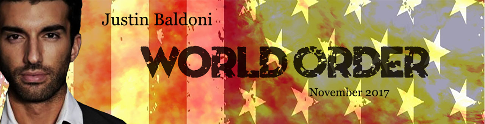

Movie Poster
This project was inspired by the work of Justin Baldoni. It was a class project to take images and compile them into a new design for a movie. The image for the movie poster is made up of an image of a United States Flag, an image of fire, and an image of Justin Baldoni sitting in a chair. The first image of the flag is the background piece. It was distorted and blurred so that it looked like the fire was destroying it. The image of the fire was layed over the flag, and the image of Justin was layed over the fire. The coloring of the entire image was made to have brighter reds so that it looked like the world around him was on fire.


